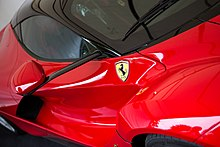

Bienvenido a la pagina de autos
Donde puedes encontrar información sobre tus autos favoritos.
SELECION DEL EDITOR
Ferrari LaFerrari

LaFerrari, nombre del proyecto F150, es un automóvil deportivo híbrido de producción limitada construido por el fabricante italiano de automóviles Ferrari. LaFerrari significa "El Ferrari" en italiano y algunas otras lenguas romances, en el sentido de que es el Ferrari "definitivo".
A partir de 2020, el LaFerrari es el último Ferrari con un motor de 12 cilindros montado en el medio.
Se consideraron nueve estudios de diseño conceptual para el buque insignia híbrido V12 en 2011, reducidos a cinco en abril de 2011 (tres por Ferrari Centro Stile y dos por Pininfarina). De estos, se construyeron dos conceptos de tamaño completo: LaFerrari Concept Manta (designación interna: 2011 Modelo 2) y LaFerrari Concept Tensostruttura (designación interna 2011 Modelo 3). Estos fueron presentados en el Museo Ferrari en Maranello, Italia y Ferrari World en Abu Dhabi. El diseño final del LaFerrari es similar al concepto de Manta (Modelo 2).
Especificaciones
LaFerrari es el primer híbrido suave producido por la marca automotriz italiana, que proporciona la mayor potencia de salida de cualquier automóvil de carretera Ferrari al tiempo que reduce el consumo de combustible en un 40 por ciento. El motor de gasolina de combustión interna de LaFerrari es un motor Ferrari F140 de inyección directa de combustible V12 longitudinalmente trasero montado en el medio con una cilindrada de 6,262 cc (6,3 L) que genera una potencia máxima de 800 PS (588 kW; 789 CV) a 9.000 rpm y 700 N⋅m (516 lb⋅ft) de torque a 6.750 rpm, complementado por una unidad KERS de 163 PS (120 kW; 161 hp) (llamada HY-KERS), que proporciona ráfagas breves de potencia adicional. El sistema KERS agrega potencia adicional al nivel de salida de potencia del motor de combustión para un total de 963 PS (708 kW; 950 hp) y un par combinado de 900 N⋅m (664 lb⋅ft). Ferrari afirma unas emisiones de CO2 de 330 g / km. El diámetro X carrera del motor es de 94 mm × 75,2 mm (3,70 pulg. × 2,96 pulg.) Con una relación de compresión de 13,5: 1 y una potencia específica de 94 kW (128 PS) por litro. Está acoplado a una transmisión de doble embrague de 7 velocidades.
Rendimiento
Ferrari afirma que el coche tiene una velocidad máxima de 350 km / h (220 mph), similar a la velocidad máxima del Enzo. 0–100 km / h (0–62 mph) en menos de 3 segundos, 0–200 km / h (0–124 mph) en menos de 7 segundos y 0–300 km / h (0–186 mph) en 15 segundos fueron anunciados por Ferrari. Ferrari también afirma que el coche superó su circuito de pruebas de Fiorano en 1: 19,70.